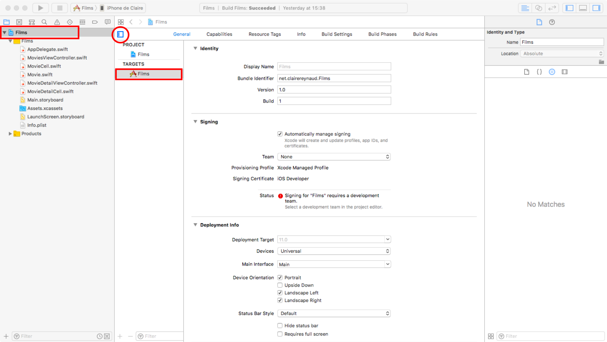
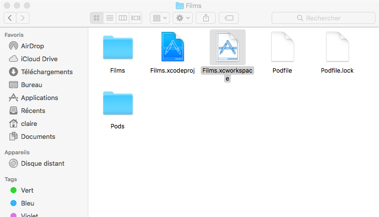
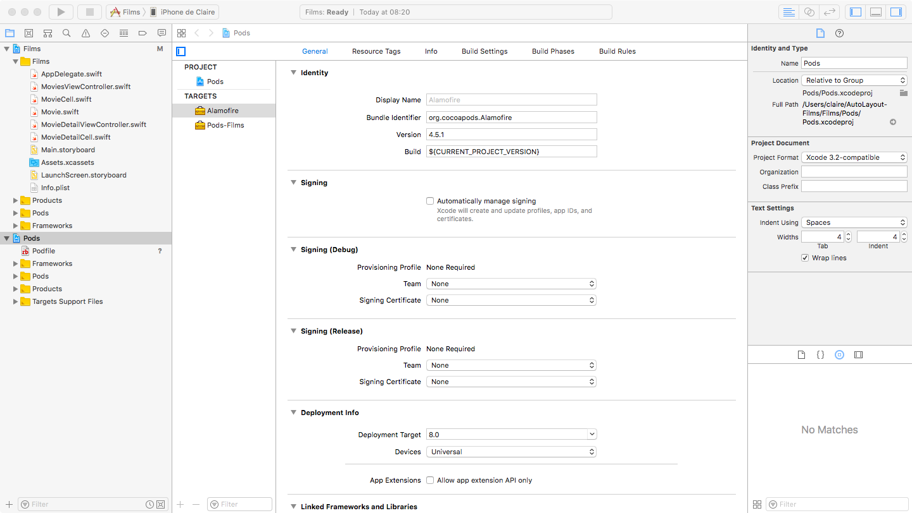

Networking
Introduction
En général, les applications n'ont pas toutes les données dont elles ont besoin en local. Elles appellent des services via le réseau pour récupérer des données, des images etc...
Dans l'exemple de l'application catalogue de films, vous allez connecter l'app à l'API de themoviedb.org. Voici sa documentation : https://www.themoviedb.org/documentation/api.
Pour simplifier le code qui effectue les requêtes vers cette API, nous allons utiliser un « pod », Alamofire : https://github.com/Alamofire/Alamofire
Un « pod » est une bibliothèque (« library »), une brique logicielle, pour les projets Swift et Objective-C. Le système de gestion de dépendances qui gère les « pods » s'appelle « Cocoapods » : https://cocoapods.org/.
Notions nécessaires : Pods et cocoapods, networking avec Alamofire, Swift closures
Reprenez le projet Xcode de l'atelier 4, où vous aviez affiché une liste de films et une vue de détail avec Auto Layout, ou clonez ce repository qui contient la solution de l'atelier 4 : https://github.com/Formation-iOS/Atelier4_AutoLayout_Films.
Cocoapods
Tout d'abord, il faut installer Cocoapods sur votre machine. Cocoapods est un outil Ruby, et Ruby est déjà disponible sur macOS.
Ouvrez un terminal, et entrez la ligne de commande suivante :
$ sudo gem install cocoapods
Ensuite, dans le répertoire qui contient votre projet Xcode, au même niveau que le répertoire .xcodeproj, ajoutez un fichier appellé Podfile. Ce fichier décrit les dépendances (« pods ») de votre projet. Ici on va utiliser le pod de Networking « Alamofire ».
Il est conseillé d'utiliser des versions exactes des pods (exemple : 4.5.1), pour que le build de votre application soit reproductible.
platform :ios, '10.0'
use_frameworks!
target 'MyApp' do
pod 'Alamofire', '4.5.1'
end
Dans le fichier Podfile, remplacez 'MyApp' par le nom de la target de build de votre application.
Pour voir le nom de votre target de build, sélectionnez le projet tout en haut de l'explorateur de projet (partie gauche d'Xcode), puis cliquez sur le bouton entouré en rouge ci-dessous.

Ensuite, lancez la commande qui va installer les pods :
$ pod install
Analyzing dependencies
Downloading dependencies
Installing Alamofire (4.5.1)
Generating Pods project
Integrating client project
[!] Please close any current Xcode sessions and use `Films.xcworkspace` for this project from now on.
Sending stats
Pod installation complete! There is 1 dependency from the Podfile and 1 total pod installed.
Attention au message Cocoapods : « [!] Please close any current Xcode sessions and use Films.xcworkspace for this project from now on ».
Quittez Xcode, et à partir de maintenant ouvrez toujours le .xcworkspace dans Xcode, et plus le .xcodeproj. Xcode ne saura pas où trouver les pods dont dépend votre app si vous continuez à utiliser le .xcodeproj.

Vous pouvez ouvrir le nouveau .xcworkspace dans Xcode depuis Finder, ou en ligne de commande depuis le Terminal :
$ open App.xcworkspace
Vous devriez voir un élément appellé « Pods » qui apparaît dans l'explorateur du projet dans la partie gauche d'Xcode, comme dans l'image ci-dessous.

Pour utiliser Alamofire dans votre code, il faut l'importer dans un fichier .swift de la manière suivante :
import Alamofire
Networking avec Alamofire
Jusqu'à présent, l'application de films n'a utilisé que des données en local, mais il serait plus intéressant d'accéder à une vraie base de données de films. Vous allez utiliser celle fournie par themoviedb.org.
1ère partie : liste de films sans images
Voici l'URL de requête GET à utiliser pour obtenir la liste des meilleurs films via l'API de themoviedb.org :
https://api.themoviedb.org/3/discover/movie?sort_by=popularity.desc&api_key=b692eafd258dae823a2d9ed21dbcdeb5
{
"page": 1,
"results": [
{
"adult": false,
"backdrop_path": "/tcheoA2nPATCm2vvXw2hVQoaEFD.jpg",
"genre_ids": [
12,
18,
27
],
"id": 346364,
"original_language": "en",
"original_title": "It",
"overview": "In a small town in Maine, seven children known as The Losers Club come face to face with life problems, bullies and a monster that takes the shape of a clown called Pennywise.",
"popularity": 745.88068,
"poster_path": "/9E2y5Q7WlCVNEhP5GiVTjhEhx1o.jpg",
"release_date": "2017-09-05",
"title": "It",
"video": false,
"vote_average": 7.4,
"vote_count": 2039
},
{
"adult": false,
"backdrop_path": "/uX7LXnsC7bZJZjn048UCOwkPXWJ.jpg",
"genre_ids": [
10751,
16,
12,
35
],
"id": 211672,
"original_language": "en",
"original_title": "Minions",
"overview": "Minions Stuart, Kevin and Bob are recruited by Scarlet Overkill, a super-villain who, alongside her inventor husband Herb, hatches a plot to take over the world.",
"popularity": 534.295684,
"poster_path": "/q0R4crx2SehcEEQEkYObktdeFy.jpg",
"release_date": "2015-06-17",
"title": "Minions",
"video": false,
"vote_average": 6.4,
"vote_count": 4733
},
..........
],
"total_pages": 16412,
"total_results": 328222
}
Réutilisez le code que vous avez utilisé pour le parsing de données provenant de fichiers .json. Remplacez ce code par un appel à l'API, en utilisant Alamofire, ainsi que les Codable et JSONDecoder vus précédemment.
Exemple de requête GET avec Alamofire :
Alamofire.request("https://httpbin.org/get").responseJSON { response in
print("Request: \(String(describing: response.request))") // original url request
print("Response: \(String(describing: response.response))") // http url response
print("Result: \(response.result)") // response serialization result
}
Alamofire utilise les closures Swift. Une closure Swift est un bloc de code « indépendant ». Par exemple, on peut le passer en paramètre à des fonctions, dans le but de l'appeller dans l'implémentation de la fonction. C'est alors une sorte de « callback ».
Dans l'exemple précédent, cette partie est une closure :
{ response in
print("Request: \(String(describing: response.request))") // original url request
print("Response: \(String(describing: response.response))") // http url response
print("Result: \(response.result)") // response serialization result
}
Il s'agit du bloc de code qui sera appellé par la méthode « responseJSON » quand la réponse à la requête sera arrivée. Notez que dans ce cas, cet appel à la closure ce fera de manière asynchrone.
2ème partie : affichage des images via le pod AlamofireImage
Voici un exemple d'URL d'image de films fournies par themoviedb.org : https://image.tmdb.org/t/p/w500/q0R4crx2SehcEEQEkYObktdeFy.jpg
Cette URL est composée d'une partie fixe, https://image.tmdb.org/t/p/w500, à laquelle est ajoutée le nom d'un fichier .jpg d'image. Ce nom est fourni dans le json de la liste des films (poster_path et backdrop_path).
Utilisez le pod AlamofireImage pour afficher les images des posters dans la liste des films, puis l'image backdrop dans l'écran de détail d'un film.